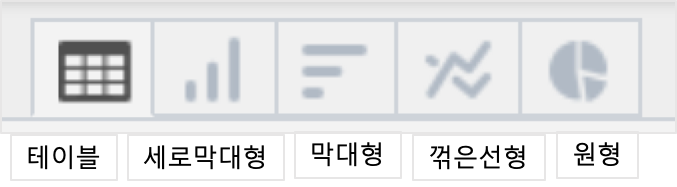
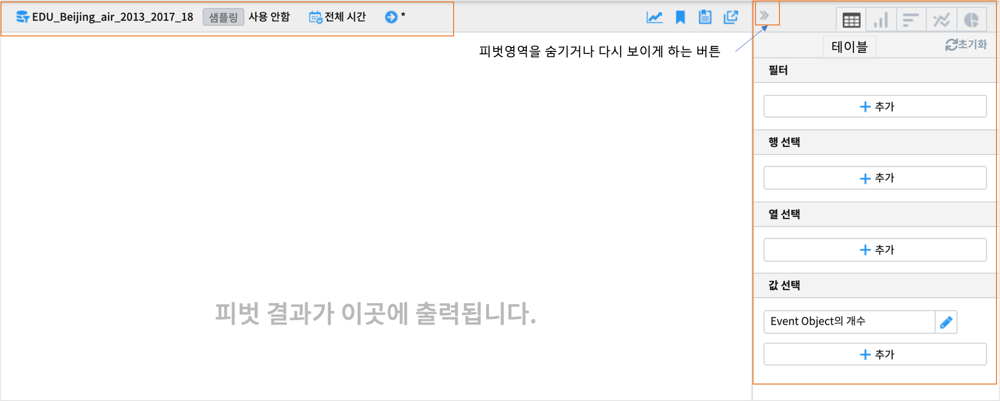
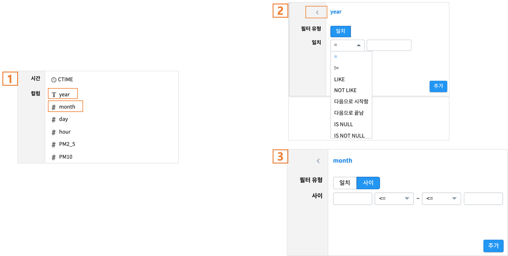
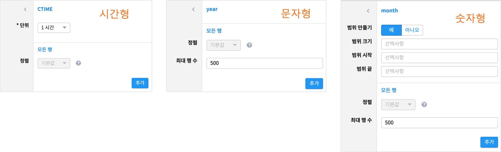
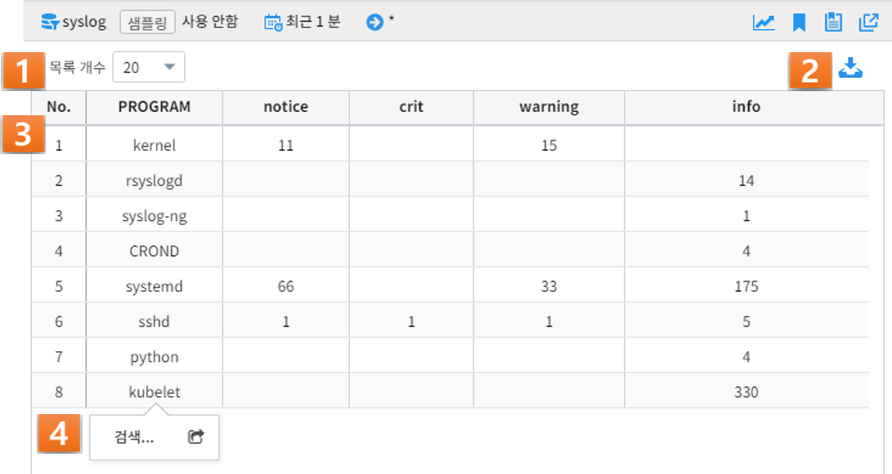
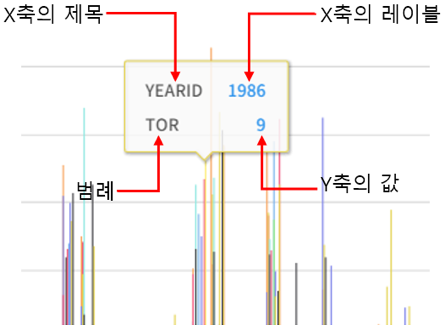

3.3. 피벗분석¶
3.3.1. 피벗분석 화면 개요¶
피벗분석 기능은 사용자가 검색 결과의 각 필드를 행, 열, 값 등으로 적절히 조합함으로써 원하는 분석 결과를 쉽고 빠르게 도출하기 위한 분석 툴입니다.
검색어의 pivot 명령어 구문 실행돠 동일하며, UI 인터페이스를 통해 쉽게 피벗 기능을 사용할 수 있습니다.
피벗분석 화면의 구성은 다음과 같습니다.
| 번호 | 구분 | 설명 |
|---|---|---|
| 1 | 모델/시간 설정 | 검색하고자 하는 데이터 모델과 검색 기간을 설정 |
| 2 | 컬럼 목록 | 선택한 데이터 모델의 컬럼들을 표기 |
| 3 | 데이터 설정 표기 | 데이터 모델/시간/검색어 등의 설정된 정보들을 표기하는 영역 |
| 4 | 결과 화면 | 검색 및 피벗 조건에 따른 피벗 결과를 출력하는 영역 |
| 5 | 피벗/시각화 설정 | 시각화 유형에 따라 피벗 혹은 시각화 방식을 설정하는 컨트롤 영역 |
1번 모델/시간 설정은 검색의 데이터모델 및 시간, 샘플링 설정 을 참고하시기 바랍니다.
3번 데이터 설정 표기는 검색 메뉴에서 이동 한 경우에는 검색 메뉴의 데이터모델과 검색 기간, 검색어가 표기됩니다.
3.3.2. 피벗/시각화 설정¶
{kind=link}
3.3.2.1. 피벗 설정하기: 테이블¶
{kind=link}
3.3.2.1.1. 필터¶
{kind=link}
필터를 클릭하면 피벗 대상 데이터모델의 컬럼 목록이 나옵니다.(1번)
컬럼이 텍스트형이면 필터유형이 일치 만 있는 창이 나옵니다.(2번)
숫자형 컬럼을 선택한 경우에는 필텨유형이 《일치》와 《사이》가 나옵니다.(3번)
| 필드 유형 | 필터 일치 조건 |
| 문자형 |
|
| 숫자형 |
|
3.3.2.1.2. 행 선택(선택 항목)¶
{kind=link}
선택한 행 컬럼이 시간 필드 인 경우
| 설정 항목 | 설명 |
| 단위 |
|
| 정렬 |
|
선택한 행 컬럼이 시간 필드가 아닌 경우
| 필드 유형 | 설정 항목 | 설명 |
|---|---|---|
| 문자형 | 정렬 |
|
| 최대 행 수 |
|
|
| 숫자형 | 범위 만들기 |
|
| 범위 크기 |
|
|
| 범위 시작 |
|
|
| 범위 끝 |
|
|
| 정렬 |
|
|
| 최대 행 수 |
|
3.3.2.1.3. 열 선택(선택 항목)¶
사용자는 출력될 결과의 열에 해당되는 필드를 설정할 수 있습니다.
필드 리스트에서 특정 필드를 선택하고, 최대 열 수와 대소문자 구분 여부를 설정합니다.
《대소문자 구분 여부》 는 pivot집계를 할 때, 대/소문자 구분 여부를 선택합니다.
3.3.2.1.4. 값 선택¶
사용자는 출력될 결과값을 설정할 수 있습니다.
《값 선택》에는 default로 Event Object의 개수가 설정되어 있으며, 특정 필드에 대한 피벗 실행 결과 값을 콤보박스에서 선택하여 설정할 수 있습니다.
필드 유형별 결과값 설정
| 필드 유형 | 설정 항목 | 설명 |
| 시간형 | 값 |
|
| 문자형 | 값 |
|
| 숫자형 | 값 |
|
3.3.2.2. 피벗 결과 분석 하기: 테이블¶
{kind=link}
| 번호 | 구분 | 설명 |
| 1 | 목록 개수 드랍다운 | 결과 영역에 출력되는 피벗 실행 결과에 대하여, 페이지 당 출력 가능한 리스트의 수 지정 (10, 20, 50) |
| 2 | 내보내기 버튼 | 사용자가 설정한 피벗의 실행 결과를 파일로 다운로드하거나 HDFS 등의 원격 위치에 저장할 수 있습니다. 버튼을 클릭하면 검색과 동일한 내보내기 창이 팝업됩니다. |
| 3 | 피벗 결과 그리드 | 피벗 결과 혹은 피벗 결과의 일부분을 출력한 그리 |
| 4 | 검색 화면 이동 메뉴 | 선택한 셀의 필드/값을 가지고 검색어를 구성하여 검색 화면으로 이동합니다. [예시1] |
| [예시1] | 예를 들어, PROGRAM 필드의 kublet 값을 선택하였다면 검색어는 PROGRAM=’kublet’ 으로 설정됩니다. |
3.3.2.3. 피벗 설정하기: 차트¶
챠트의 화면 UI 수정 버전(2020.07월 예정)은 보완 예정입니다.
| 번호 | 구분 | 설명 |
| 1 | 필터 |
|
| 2 | X축 |
|
| 3 | Y축 |
|
| 4 | 색상(범례) |
|
3.3.2.4. 피벗 결과 분석 하기: 차트¶
출력된 피벗 차트에서 특정 그래프에 마우스 오버하면, 아래와 같이 해당 그래프에 대한 자세한 정보가 pop-up으로 오픈됩니다.
범례에서 특정 항목을 클릭하면, 클릭한 범례에 해당하는 필드를 미선택으로 변경하게 되므로, 차트에서 해당 범례가 사라지게 됩니다.
또한, 차트의 특정 영역을 드래그하여 해당 영역의 차트만 Zoom-in하여 분석할 수 있습니다.
Zoom-in된 상태에서 원래의 차트 상태로 복구하려면 우측 상단의 《확대/축소 재설정》 버튼을 클릭하면 됩니다.
마지막으로, 막대 등 차트에 그려진 특정 도형을 클릭하면 선택한 도형의 필드-값으로 검색 화면으로 이동하거나 새 창에서 검색 작업을 수행할 수 있습니다.
3.3.3. 부가 기능: 피벗¶
데이터 브라우저에는 사용자의 작업을 돕는 부가기능이 준비되어 있습니다. 이는 아래와 같습니다.
| 번호 | 구분 | 설명 |
| 1 | 다른 화면으로 이동 | 피벗, 고급시각화, 이상탐지 화면으로 이동할 수 있는 메뉴 버튼 |
| 2 | 시각화 저장 | 현재 검색 조건과 여러가지 설정들을 템플릿으로 저장합니다. |
| 3 | 불러오기 | 검색 이력 및 시각화 목록 창을 여는 버튼 |
| 4 | 새 창에서 실행 | 현재 설정 그대로 새 창에서 검색 작업을 실행하는 버튼 |
- 화면 이동: 검색 화면의 화면 이동 를 참고하시기 바랍니다.
- 새 창에서 열기: 검색 화면의 새 창에서 열기 를 참고하시기 바랍니다.
- 결과 내보내기: 검색 화면의 결과 내보내기 를 참고하시기 바랍니다.